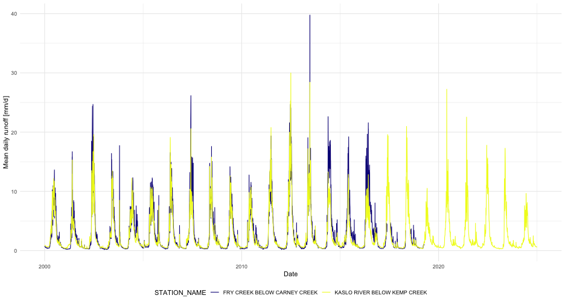

tidyhydat: An Introduction
Sam Albers
2026-06-11
Source:vignettes/tidyhydat_an_introduction.Rmd
tidyhydat_an_introduction.RmdPackage loading
In addition to tidyhydat, this vignette makes use of the dplyr package for data manipulations and ggplot2 for plotting.
tidyhydat package
This vignette will outline a few key options that will hopefully make
tidyhydat useful.
HYDAT download
To use many of the functions in the tidyhydat package
you will need to download a version of the HYDAT database, Environment
and Climate Change Canada’s database of historical hydrometric data then
tell R where to find the database. Conveniently tidyhydat
does all this for you via:
This downloads the most recent version of HYDAT and then saves it in
a location on your computer where tidyhydat’s function will
look for it. Do be patient though as this takes a long time! To see
where HYDAT was saved you can run hy_dir(). Now that you
have HYDAT downloaded and ready to go, you are all set to begin some
hydrologic analysis.
Combining validated and provisional data
For most analysis needs, the available_flows() and
available_levels() functions provide the most complete
picture by combining validated historical data with recent provisional
real-time data:
available_flows(
station_number = "08MF005",
start_date = "2020-01-01",
end_date = Sys.Date()
)These functions: - Automatically combine validated data from HYDAT
(or web service if HYDAT unavailable) with provisional real-time data -
Include an Approval column indicating whether each record
is “final” (validated) or “provisional” (subject to revision) -
Aggregate real-time data to daily means for consistency - Handle missing
data gracefully
For water levels, use available_levels():
available_levels(
station_number = "08MF005",
start_date = "2020-01-01",
end_date = Sys.Date()
)Usage of HYDAT functions
Most functions in tidyhydat follow a common argument
structure. We will use the hy_daily_flows() function for
the following examples though the same approach applies to most
functions in the package (See ls("package:tidyhydat") for a
list of exported objects). Much of the functionality of
tidyhydat originates with the choice of hydrometric
stations that you are interested in. A user will often find themselves
creating vectors of station numbers. There are several ways to do
this.
The simplest case is if you would like to extract only station. You
can supply this directly to the station_number
argument:
hy_daily_flows(station_number = "08LA001")## Queried from version of HYDAT released on 2026-04-17
## Observations: 32,447
## Measurement flags: 6,304
## Parameter(s): Flow
## Date range: 1914-01-01 to 2024-12-31
## Station(s) returned: 1
## Stations requested but not returned:
## All stations returned.
## # A tibble: 32,447 × 5
## STATION_NUMBER Date Parameter Value Symbol
## <chr> <date> <chr> <dbl> <chr>
## 1 08LA001 1914-01-01 Flow 144 <NA>
## 2 08LA001 1914-01-02 Flow 144 <NA>
## 3 08LA001 1914-01-03 Flow 144 <NA>
## 4 08LA001 1914-01-04 Flow 140 <NA>
## 5 08LA001 1914-01-05 Flow 140 <NA>
## 6 08LA001 1914-01-06 Flow 136 <NA>
## 7 08LA001 1914-01-07 Flow 136 <NA>
## 8 08LA001 1914-01-08 Flow 140 <NA>
## 9 08LA001 1914-01-09 Flow 140 <NA>
## 10 08LA001 1914-01-10 Flow 140 <NA>
## # ℹ 32,437 more rowsAnother method is to use hy_stations() to generate your
vector which is then given the station_number argument. For
example, we could take a subset for only those active stations within
Prince Edward Island (Province code:PE) and then create vector for
hy_daily_flows():
PEI_stns <- hy_stations() |>
filter(HYD_STATUS == "ACTIVE") |>
filter(PROV_TERR_STATE_LOC == "PE") |>
pull_station_number()
PEI_stns## [1] "01CA003" "01CB002" "01CB004" "01CB018" "01CC002" "01CC005" "01CC010" "01CC011" "01CD005"
hy_daily_flows(station_number = PEI_stns)## Queried from version of HYDAT released on 2026-04-17
## Observations: 129,218
## Measurement flags: 22,638
## Parameter(s): Flow
## Date range: 1961-08-01 to 2024-12-31
## Station(s) returned: 9
## Stations requested but not returned:
## All stations returned.
## # A tibble: 129,218 × 5
## STATION_NUMBER Date Parameter Value Symbol
## <chr> <date> <chr> <dbl> <chr>
## 1 01CA003 1961-08-01 Flow NA <NA>
## 2 01CB002 1961-08-01 Flow NA <NA>
## 3 01CA003 1961-08-02 Flow NA <NA>
## 4 01CB002 1961-08-02 Flow NA <NA>
## 5 01CA003 1961-08-03 Flow NA <NA>
## 6 01CB002 1961-08-03 Flow NA <NA>
## 7 01CA003 1961-08-04 Flow NA <NA>
## 8 01CB002 1961-08-04 Flow NA <NA>
## 9 01CA003 1961-08-05 Flow NA <NA>
## 10 01CB002 1961-08-05 Flow NA <NA>
## # ℹ 129,208 more rowsWe can also merge our station choice and data extraction into one unified pipe which accomplishes a single goal. For example if for some reason we wanted all the stations in Canada that had the name “Canada” in them we unify that selection and data extraction process into a single pipe:
search_stn_name("canada") |>
pull_station_number() |>
hy_daily_flows()## Queried from version of HYDAT released on 2026-04-17
## Observations: 93,879
## Measurement flags: 28,686
## Parameter(s): Flow
## Date range: 1918-08-01 to 2025-12-31
## Station(s) returned: 7
## Stations requested but not returned:
## All stations returned.
## # A tibble: 93,879 × 5
## STATION_NUMBER Date Parameter Value Symbol
## <chr> <date> <chr> <dbl> <chr>
## 1 01AK001 1918-08-01 Flow NA <NA>
## 2 01AK001 1918-08-02 Flow NA <NA>
## 3 01AK001 1918-08-03 Flow NA <NA>
## 4 01AK001 1918-08-04 Flow NA <NA>
## 5 01AK001 1918-08-05 Flow NA <NA>
## 6 01AK001 1918-08-06 Flow NA <NA>
## 7 01AK001 1918-08-07 Flow 1.78 <NA>
## 8 01AK001 1918-08-08 Flow 1.78 <NA>
## 9 01AK001 1918-08-09 Flow 1.5 <NA>
## 10 01AK001 1918-08-10 Flow 1.78 <NA>
## # ℹ 93,869 more rowsWe saw above that if we were only interested in a subset of dates we
could use the start_date and end_date
arguments. A date must be supplied to both these arguments in the form
of YYYY-MM-DD. If you were interested in all daily flow data from
station number “08LA001” for 1981, you would specify all days in 1981
:
hy_daily_flows(station_number = "08LA001",
start_date = "1981-01-01",
end_date = "1981-12-31")This generally outlines the usage of the HYDAT functions within
tidyhydat.
Real-time functions
In addition to the approved and vetted data in the HYDAT database
ECCC also offers unapproved data that is subject to revision.
tidyhydat provides three functions to access these data
sources. Remember these are unapproved data and should
treated as such:
Not every stations is currently part of the real-time network.
Therefore realtime_stations() points to a (hopefully)
updated ECCC data file of active real-time stations. We can use the
realtime_stations() functionality to get a vector of
stations by jurisdiction. For example, we can choose all the stations in
Prince Edward Island using the following:
realtime_stations(prov_terr_state_loc = "PE")hy_stations() and realtime_stations()
perform similar tasks albeit on different data sources.
hy_stations() extracts directly from HYDAT. In addition to
real-time stations, hy_stations() outputs discontinued and
non-real-time stations:
hy_stations(prov_terr_state_loc = "PE")This is contrast to realtime_stations() which downloads
all real-time stations. Though this is not always the case, it is best
to use realtime_stations() when dealing with real-time data
and hy_stations() when interacting with HYDAT. It is also
appropriate to filter the output of hy_stations() by the
REAL_TIME column.
Meterological Service of Canada datamart -
realtime_dd()
To download real-time data using the datamart we can use
approximately the same conventions discussed above. Using
realtime_dd() we can easily select specific stations by
supplying a station of interest:
realtime_dd(station_number = "08LG006")Another option is to provide simply the province as an argument and download all stations from that province:
realtime_dd(prov_terr_state_loc = "PE")Real-time web service - realtime_ws()
The realtime_ws() function provides access to ECCC’s
real-time web service. This offers several advantages including access
to a wider variety of parameters and the ability to filter by date
range. Using realtime_ws() requires specifying both the
station and parameter of interest:
realtime_ws(station_number = "08MF005",
parameters = 46, ## Water level
start_date = Sys.Date() - lubridate::days(30),
end_date = Sys.Date())You can query multiple parameters simultaneously. See
data("param_id") for a complete list of available parameter
codes:
realtime_ws(station_number = "08MF005",
parameters = c(46, 47), ## Water level and discharge
start_date = Sys.Date() - lubridate::days(7),
end_date = Sys.Date())Using the web service without HYDAT
For smaller queries where downloading the entire HYDAT database is
unnecessary, you can use hy_daily_flows() and
hy_daily_levels() with hydat_path = FALSE to
access historical daily data directly from ECCC’s web service. These are
particularly useful when you need data for only a few stations or a
limited time period:
Historical flows and levels via web service
hy_daily_flows(station_number = "08MF005",
hydat_path = FALSE,
start_date = "2020-01-01",
end_date = "2020-12-31")Similarly for water levels:
hy_daily_levels(station_number = "08NL071",
hydat_path = FALSE,
start_date = "2019-01-01",
end_date = "2019-12-31")Multiple stations can be queried in a single call:
hy_daily_flows(station_number = c("08MF005", "08NL071"),
hydat_path = FALSE,
start_date = "2020-01-01",
end_date = "2020-12-31")Search functions
You can also make use of auxiliary functions in
tidyhydat called search_stn_name() and
search_stn_number() to look for matches when you know part
of a name of a station. For example:
search_stn_name("liard")## # A tibble: 10 × 5
## STATION_NUMBER STATION_NAME PROV_TERR_STATE_LOC LATITUDE LONGITUDE
## <chr> <chr> <chr> <dbl> <dbl>
## 1 10AA001 LIARD RIVER AT UPPER CROSSING YT 60.1 -129.
## 2 10AA006 LIARD RIVER BELOW SCURVY CREEK YT 60.8 -131.
## 3 10BE001 LIARD RIVER AT LOWER CROSSING BC 59.4 -126.
## 4 10EC004 SOUTH NAHANNI RIVER NEAR LIARD RIVER CONFLUENCE NT 61.0 -123.
## 5 10ED001 LIARD RIVER AT FORT LIARD NT 60.2 -123.
## 6 10ED002 LIARD RIVER NEAR THE MOUTH NT 61.7 -121.
## 7 10BE005 LIARD RIVER ABOVE BEAVER RIVER BC 59.7 -124.
## 8 10BE006 LIARD RIVER ABOVE KECHIKA RIVER BC 59.7 -127.
## 9 10ED008 LIARD RIVER AT LINDBERG LANDING NT 61.1 -123.
## 10 10GC004 MACKENZIE RIVER ABOVE LIARD RIVER NT 61.9 -121.Similarly, search_stn_number() can be useful if you are
interested in all stations from the 08MF sub-sub-drainage:
search_stn_number("08MF")## # A tibble: 54 × 5
## STATION_NUMBER STATION_NAME PROV_TERR_STATE_LOC LATITUDE LONGITUDE
## <chr> <chr> <chr> <dbl> <dbl>
## 1 08MF005 FRASER RIVER AT HOPE BC 49.4 -121.
## 2 08MF035 FRASER RIVER NEAR AGASSIZ BC 49.2 -122.
## 3 08MF038 FRASER RIVER AT CANNOR BC 49.1 -122.
## 4 08MF040 FRASER RIVER ABOVE TEXAS CREEK BC 50.6 -122.
## 5 08MF062 COQUIHALLA RIVER BELOW NEEDLE CREEK BC 49.5 -121.
## 6 08MF065 NAHATLATCH RIVER BELOW TACHEWANA CREEK BC 50.0 -122.
## 7 08MF068 COQUIHALLA RIVER ABOVE ALEXANDER CREEK BC 49.4 -121.
## 8 08MF072 FRASER RIVER AT LAIDLAW BC 49.3 -122.
## 9 08MF074 FRASER RIVER ABOVE HERRLING ISLAND BC 49.3 -122.
## 10 08MF075 FRASER RIVER AT LOWER KENT BC 49.2 -122.
## # ℹ 44 more rowsUsing joins
Sometimes it is required to make use of information from two tables
from HYDAT. In some cases, we need to combine the information into one
table using a common column. Here we will illustrate calculating runoff
by combining the hy_stations tables with the
hy_daily_flows table by the STATION_NUMBER
column:
stns <- c("08NH130", "08NH005")
runoff_data <- hy_daily_flows(station_number = stns, start_date = "2000-01-01") |>
left_join(
hy_stations(station_number = stns) |>
select(STATION_NUMBER, STATION_NAME, DRAINAGE_AREA_GROSS),
by = "STATION_NUMBER") |>
## conversion to mm/d
mutate(runoff = Value / DRAINAGE_AREA_GROSS * 86400 / 1e6 * 1e3)
ggplot(runoff_data) +
geom_line(aes(x = Date, y = runoff, colour = STATION_NAME)) +
labs(y = "Mean daily runoff [mm/d]") +
scale_colour_viridis_d(option = "C") +
theme_minimal() +
theme(legend.position = "bottom")
This is an effective way to make use of the variety of tables available in HYDAT.License
Copyright 2017 Province of British Columbia
Licensed under the Apache License, Version 2.0 (the "License");
you may not use this file except in compliance with the License.
You may obtain a copy of the License at
http://www.apache.org/licenses/LICENSE-2.0
Unless required by applicable law or agreed to in writing, software
distributed under the License is distributed on an "AS IS" BASIS,
WITHOUT WARRANTIES OR CONDITIONS OF ANY KIND, either express or implied.
See the License for the specific language governing permissions and
limitations under the License.